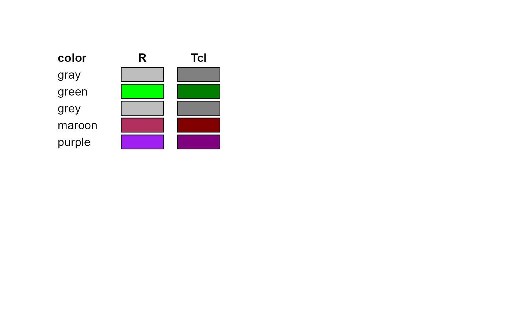

The core of Loon is implemented in Tcl and Tk. Hence, when
defining colors using color names, Loon uses the Tcl color representation
and not those of R. The colors are taken from the Tk sources:
doc/colors.n.
If you want to make sure that the color names are represented exactly as they are in R then you can convert the color names to hexencoded color strings, see the examples below.
tkcolors()
# check if R colors names and TK color names are the same setdiff(tolower(colors()), tolower(tkcolors()))#> character(0)#> [1] "alice" "antique" "blanched" "almond" "cadet" #> [6] "cornflower" "dark" "olive" "sea" "slate" #> [11] "deep" "sky" "dim" "dodger" "floral" #> [16] "forest" "ghost" "hot" "indian" "blush" #> [21] "lawn" "lemon" "chiffon" "light" "steel" #> [26] "lime" "medium" "spring" "midnight" "mint" #> [31] "cream" "misty" "rose" "navajo" "old" #> [36] "lace" "drab" "pale" "papaya" "whip" #> [41] "peach" "puff" "powder" "rosy" "royal" #> [46] "saddle" "sandy" "smoke"# hence there are currently more valid color names in Tk # than there are in R # Let's compare the colors of the R color names in R and Tk tohex <- function(x) { sapply(x, function(xi) { crgb <- as.vector(col2rgb(xi)) rgb(crgb[1], crgb[2], crgb[3], maxColorValue = 255) }) } df <- data.frame( R_col = tohex(colors()), Tcl_col = hex12tohex6(l_hexcolor(colors())), row.names = colors(), stringsAsFactors = FALSE ) df_diff <- df[df$R_col != df$Tcl_col,] if (requireNamespace("grid", quietly = TRUE)) { grid::grid.newpage() grid::pushViewport(grid::plotViewport()) x_col <- grid::unit(0, "npc") x_R <- grid::unit(6, "lines") x_Tcl <- grid::unit(10, "lines") grid::grid.text('color', x=x_col, y=grid::unit(1, "npc"), just='left', gp=grid::gpar(fontface='bold')) grid::grid.text('R', x=x_R, y=grid::unit(1, "npc"), just='center', gp=grid::gpar(fontface='bold')) grid::grid.text('Tcl', x=x_Tcl, y=grid::unit(1, "npc"), just='center', gp=grid::gpar(fontface='bold')) for (i in 1:nrow(df_diff)) { y <- grid::unit(1, "npc") - grid::unit(i*1.2, "lines") grid::grid.text(rownames(df_diff)[i], x=x_col, y=y, just='left') grid::grid.rect(x=x_R, y=y, width=grid::unit(3, "line"), height=grid::unit(1, "line"), gp=grid::gpar(fill=df_diff[i,1])) grid::grid.rect(x=x_Tcl, y=y, width=grid::unit(3, "line"), height=grid::unit(1, "line"), gp=grid::gpar(fill=df_diff[i,2])) } }